Analyse · Attaques · Détection d'anomalies sur MAVLink
Les drones sont aujourd’hui utilisés dans plusieurs domaines comme la surveillance, l’agriculture et les missions de secours. Pour fonctionner, ils utilisent des protocoles de communication permettant l’échange des données entre le drone et la station de contrôle au sol. Parmi ces protocoles, MAVLink est l’un des plus utilisés.
Le contrôleur de vol embarqué (Pixhawk avec ArduPilot ou PX4) reçoit les données du GPS et de l'IMU, stabilise l'appareil et exécute la mission. Il échange avec une station de contrôle au sol , la GCS (QGroundControl, Mission Planner, MAVProxy) , via le protocole MAVLink, le plus souvent en UDP sur le port 14550.
MAVLink (Micro Air Vehicle Link) est un protocole de messagerie léger, conçu pour les liaisons radio à bande passante limitée. Il transporte la télémétrie (GPS, altitude, batterie), les commandes (armement, changement de mode), et les plans de mission.
| Message | Contenu | Rôle |
|---|---|---|
| HEARTBEAT | État système, mode | Signal « je suis vivant », 1 Hz |
| GPS_RAW_INT | Lat, lon, alt, satellites | Données GPS brutes |
| GLOBAL_POSITION_INT | Position + altitude + vitesse | Position fusionnée |
| ATTITUDE | Roll, pitch, yaw | Orientation, stabilisation |
| VFR_HUD | Altitude, vitesse, throttle | Affichage HUD |
| SYS_STATUS | Batterie, capteurs | Surveillance système |
| MISSION_CURRENT | Waypoint en cours | Suivi de mission |
| COMMAND_LONG | Commandes (arm, takeoff…) | Ordres vers le drone |
| SET_POSITION_TARGET_GLOBAL_INT | Cible de position | Guidage externe |
N'importe qui sur le réseau peut écouter le trafic et lire la télémétrie en clair : position GPS, vitesse, état batterie, plan de mission.
Un attaquant peut se faire passer pour la GCS et envoyer des commandes, ou pour le GPS et fournir de fausses positions.
ARM/DISARM, SET_MODE, NAV_TAKEOFF — un paquet bien formé suffit pour prendre la main sur le véhicule.
On capture des messages légitimes et on les rejoue plus tard pour reproduire une action (changement de mode, mission, etc.).
On installe et on connecte les outils : le simulateur SITL d'ArduPilot, la station de contrôle QGroundControl, Wireshark pour capturer le trafic, et MAVProxy pour interagir avec le drone en ligne de commande.
ArduPilot SITL (Software In The Loop) simule un drone complet sur ordinateur : le firmware réel tourne sur l'hôte, les capteurs sont simulés, et la station au sol s'y connecte comme si c'était un vrai drone.
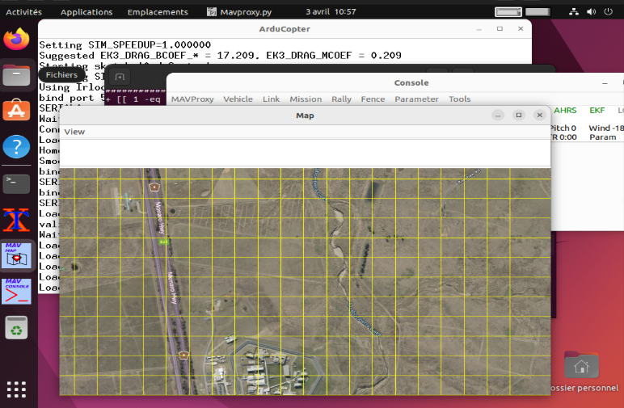
QGroundControl est la station de contrôle au sol (GCS). Elle se connecte au SITL via UDP (par défaut 127.0.0.1:14550) pour visualiser la télémétrie et envoyer des commandes.
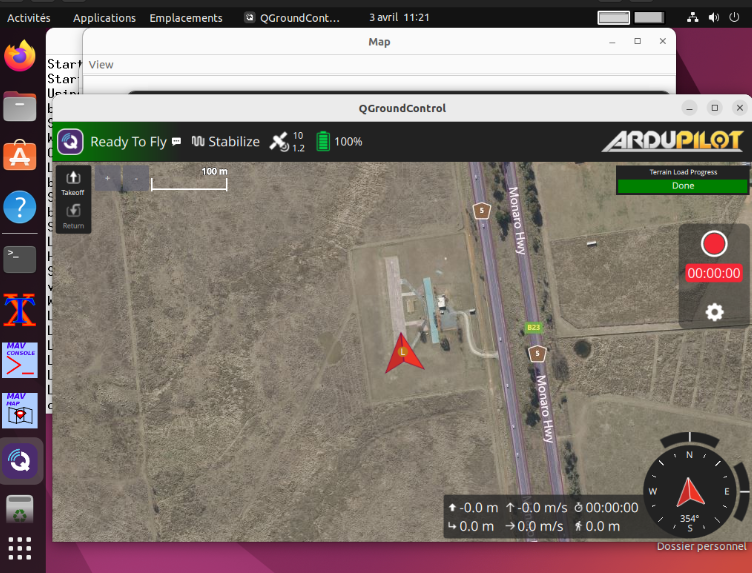
Téléchargez l'installeur .exe depuis le site officiel et lancez-le :
WSL 2 expose l'interface réseau de Windows à Ubuntu. ArduPilot envoie ses paquets UDP vers l'adresse IP de l'hôte Windows, que QGroundControl reçoit directement.
HOST_IP=$(ip route show | grep default | awk '{print $3}')
puis utilisez --out=udp:$HOST_IP:14550.
Wireshark capture le trafic UDP entre le SITL et la GCS. Par défaut il ne reconnaît pas le protocole MAVLink — il faut lui ajouter un dissector en Lua.
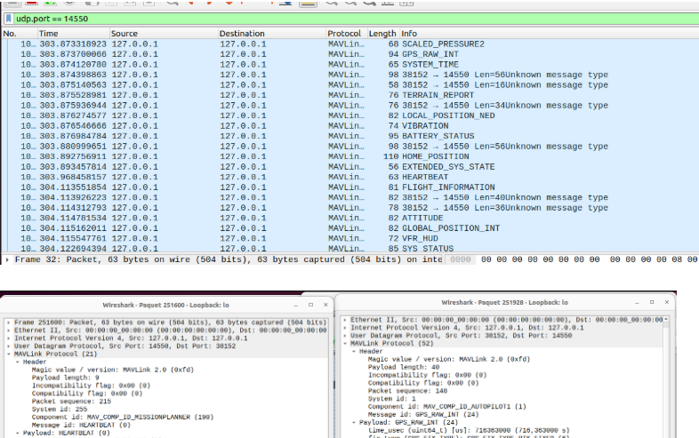
udp.port == 14550 révèle toute la télémétrie.
MAVProxy est un proxy MAVLink en ligne de commande. Il permet d'observer en direct les messages échangés et d'envoyer des commandes au drone.
Émis 1 fois par seconde par chaque participant (drone et GCS), il indique « je suis vivant, voici mon état ».
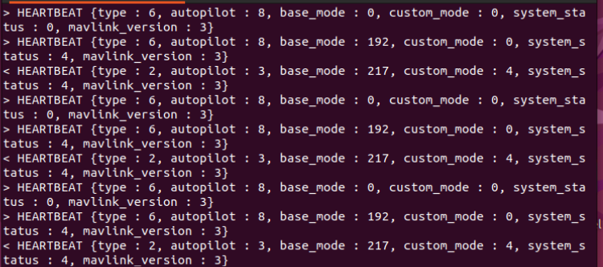
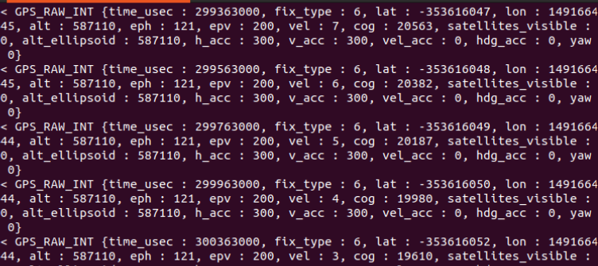
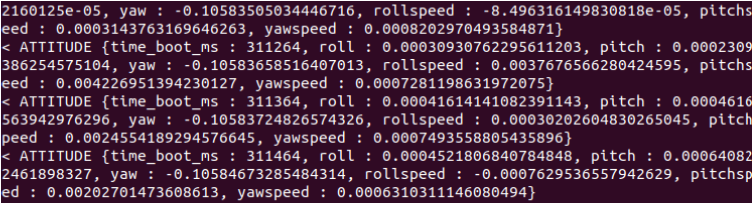
Une mission est une suite de waypoints (latitude, longitude, altitude) que le drone doit suivre en mode AUTO. Deux méthodes : un fichier texte au format QGC, ou un tracé direct sur la carte.
| SEQ | cur | frame | cmd | p1 | p2 | p3 | p4 | lat | lon | alt | auto | Type |
|---|---|---|---|---|---|---|---|---|---|---|---|---|
| 0 | 1 | 3 | 16 | 0 | 0 | 0 | 0 | -35.3625 | 149.1650 | 10 | 1 | NAV_WAYPOINT |
| 1 | 0 | 3 | 16 | 0 | 0 | 0 | 0 | -35.3630 | 149.1655 | 10 | 1 | NAV_WAYPOINT |
| 2 | 0 | 3 | 16 | 0 | 0 | 0 | 0 | -35.3635 | 149.1660 | 10 | 1 | NAV_WAYPOINT |
| 3 | 0 | 3 | 21 | 0 | 0 | 0 | 0 | 0 | 0 | 0 | 1 | LAND |
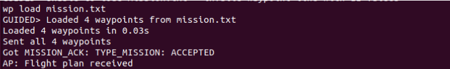
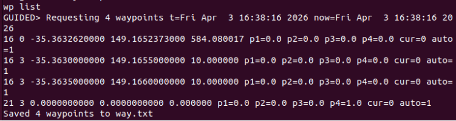
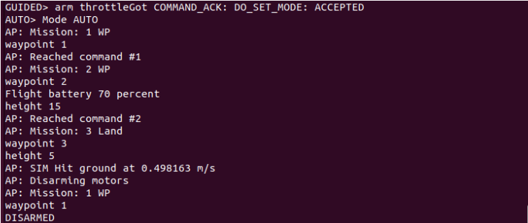
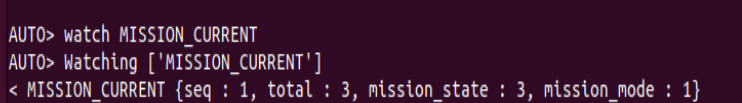
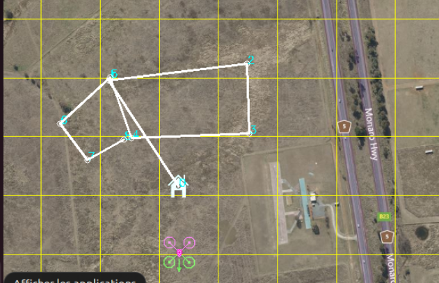
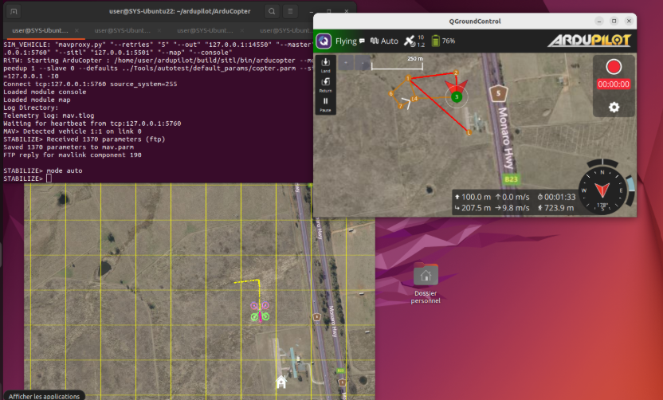
| Commande | Description | Utilisation |
|---|---|---|
| watch HEARTBEAT | Surveille le pouls système | État GCS et drone |
| watch GPS_RAW_INT | Données GPS brutes | Navigation, position |
| watch ATTITUDE | Roll, pitch, yaw | Stabilisation |
| watch MISSION_CURRENT | Waypoint actuel | Suivi de mission |
| wp load mission.txt | Charger un plan | Avant vol autonome |
| wp list | Vérifier les waypoints | Validation |
| mode AUTO / GUIDED | Changer de mode | Démarrage / contrôle |
| arm throttle | Armer les moteurs | Avant décollage |
| takeoff <altitude> | Décoller à une altitude | Mode GUIDED uniquement |
Maintenant que l'environnement est en place, on passe à l'offensive. Trois scénarios sont étudiés : GPS spoofing par injection de positions falsifiées, déni de service par flooding, et man-in-the-middle par ARP spoofing entre le drone et la GCS.
Le script Python ouvre une connexion MAVLink vers le drone, attend le heartbeat, puis envoie en boucle des positions GPS calculées sur un cercle de 500 m autour d'un point cible.
On lance ensuite MAVProxy pour relayer le flux 14550 vers 14551 (port d'écoute du script), puis on prépare le drone et on déclenche l'attaque.
GPS_INPUT ou HIL_GPS). C'est ce qui permet au script d'injecter ses
propres données dans le filtre EKF.
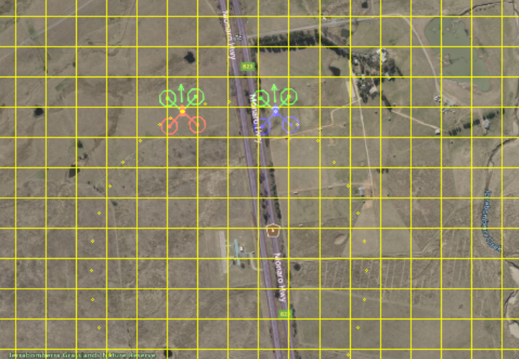
hping3 est un outil de génération de paquets réseau. L'option -1
utilise ICMP et --flood envoie à pleine vitesse, sans attendre de réponse.
Le scénario repose sur trois machines virtuelles isolées sur un même réseau privé. L'adaptateur Host-Only de VirtualBox est le choix idéal : il crée un réseau interne entre les VMs et l'hôte, sans accès Internet, ce qui correspond exactement à un réseau de contrôle de drone fermé.
192.168.56.0/24 totalement isolé :
parfait pour rejouer l'attaque sans risque et sans bruit réseau parasite.
| # | Rôle | OS / Logiciel | IP Host-Only |
|---|---|---|---|
| VM 1 | Drone simulé | Ubuntu 22.04 + ArduPilot SITL | 192.168.56.101 |
| VM 2 | Station de contrôle (GCS) | Ubuntu 22.04 + QGroundControl | 192.168.56.102 |
| VM 3 | Attaquant | Kali Linux | 192.168.56.3 |
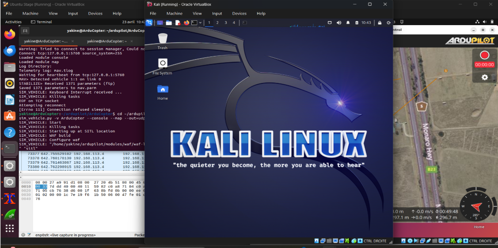
ARP (Address Resolution Protocol) associe une adresse IP à une adresse MAC sur le réseau local. Quand ArduCopter veut envoyer un paquet à QGroundControl, il demande « qui a l'IP 192.168.56.102 ? ». L'attaquant répond plus vite que la vraie machine, et fait croire que sa MAC correspond à cette IP. Idem dans l'autre sens.
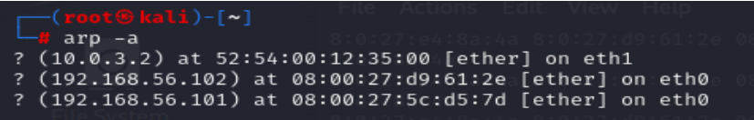
Le décodage révèle l'ensemble de la télémétrie en clair : position, vitesse, état système, mission en cours. Un attaquant connaît tout du drone et peut potentiellement injecter n'importe quelle commande.
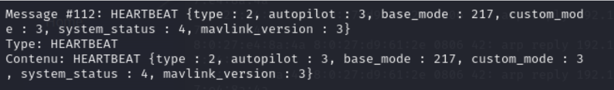
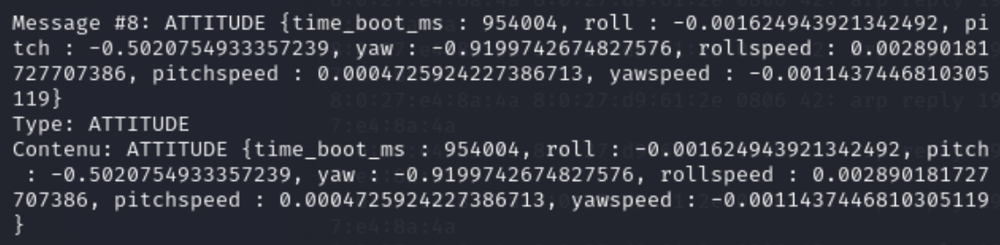
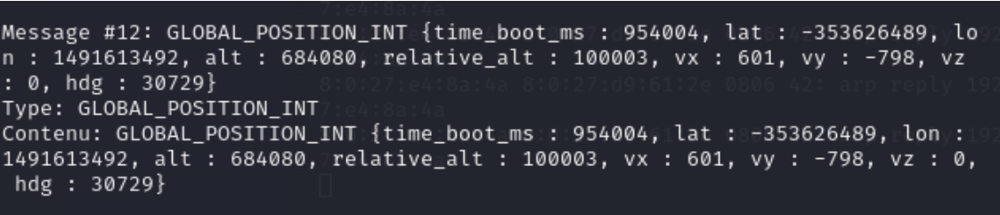
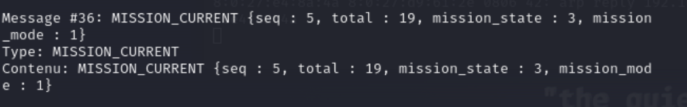
| Message | Information révélée |
|---|---|
| HEARTBEAT | Type de véhicule, autopilot, mode de vol |
| GLOBAL_POSITION_INT | Lat/lon/alt précis, vitesse, cap |
| GPS_RAW_INT | Fix GPS, nombre de satellites |
| ATTITUDE | Orientation complète du drone |
| SYS_STATUS | Tension batterie, courant, % restant |
| MISSION_CURRENT | Waypoint en cours, total mission |
| VFR_HUD | Altitude, vitesse, throttle |
| RC_CHANNELS | État des canaux de commande |
| SERVO_OUTPUT_RAW | Commandes servos / moteurs |
| NAV_CONTROLLER_OUTPUT | Cap cible, distance waypoint |
| HOME_POSITION | Point de retour défini |
Le passage de l'UAV au USV implique de simuler un environnement maritime : vagues, vent, courants. Deux niveaux de simulation sont mis en place, une version 2D rapide avec ArduRover SITL configuré en bateau, et une version 3D photoréaliste avec Gazebo Harmonic et le plugin asv_wave_sim. On termine avec une attaque adaptée à ce contexte : le GPS spoofing par dérive progressive.
ArduRover supporte un mode boat via la classe de châssis 2 (FRAME_CLASS). On ajoute une location personnalisée dans le fichier des positions de spawn, et on active les paramètres de simulation de vagues et de vent intégrés à SITL.
Une fois MAVProxy lancé, on configure le châssis en bateau et on active la simulation des vagues et du vent. Ces paramètres sont propres à SITL et n'affectent que la simulation, pas le firmware réel.
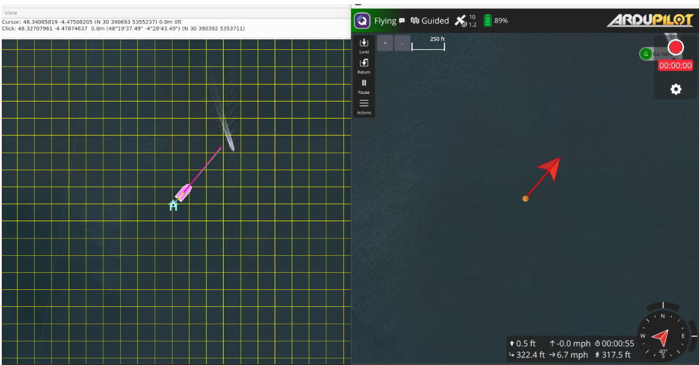
Pour une simulation plus réaliste, on couple ArduRover SITL au moteur 3D Gazebo Harmonic. Le plugin asv_wave_sim calcule une surface de mer dynamique en FFT, et le modèle BlueBoat (un USV de Blue Robotics) repose dessus avec son hydrodynamique.
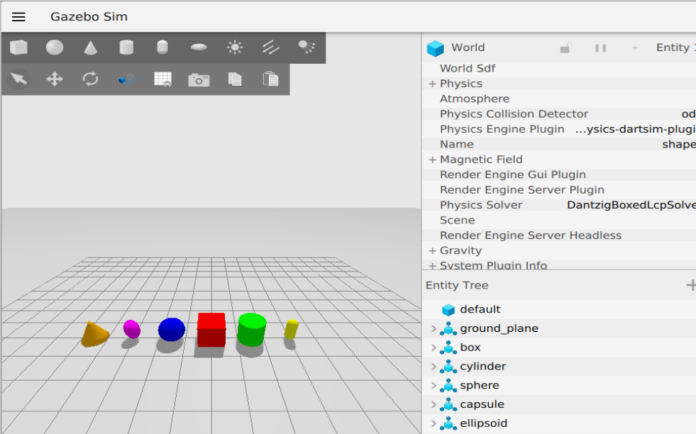
Ce plugin fait le pont entre ArduPilot SITL et Gazebo via JSON sur des sockets UDP.
Sans ce plugin, le bateau tombe à travers l'eau. C'est lui qui simule la surface marine en FFT et applique l'hydrodynamique aux objets flottants.
Le bloc complet à ajouter dans ~/.bashrc, puis source ~/.bashrc.
Le fichier blueboat_waves.sdf définit la scène : physique, plugins, mer, et
modèle BlueBoat positionné à l'origine.
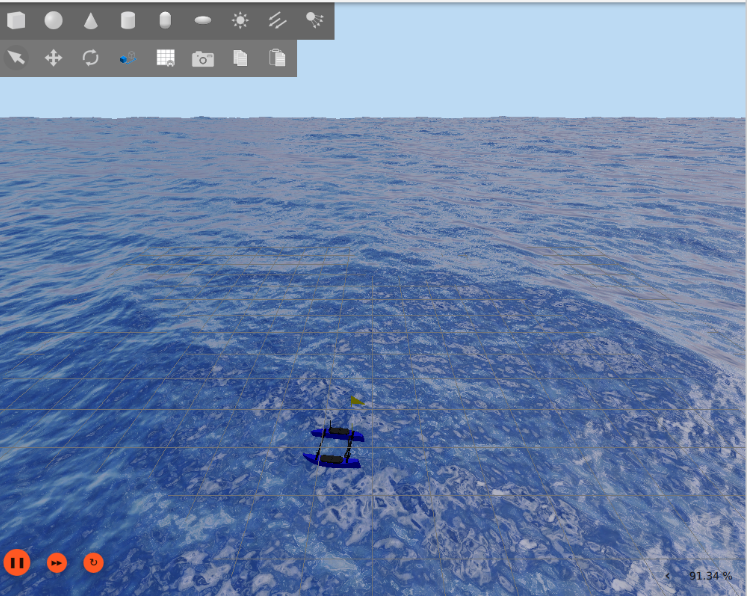
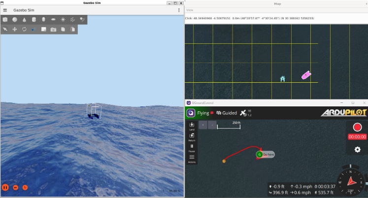
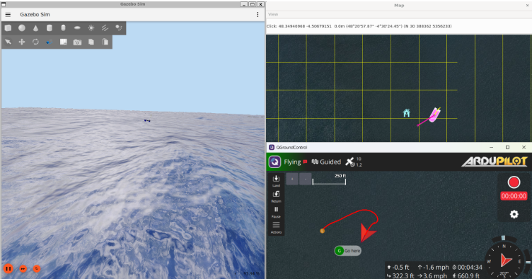
sudo apt install mesa-utils -y && glxgears
SET_POSITION_TARGET_GLOBAL_INT
qui dérivent progressivement de la vraie position du véhicule. ArduPilot conserve son GPS
authentique mais reçoit en parallèle des cibles falsifiées qui l'attirent peu à peu hors trajectoire.
Contrairement à l'attaque du scénario 1 où l'on injectait directement de fausses données dans
le filtre EKF (avec GPS1_TYPE = 14), ici on ne touche pas au capteur. On exploite
simplement le fait que MAVLink accepte des commandes de guidage externe sans authentification.
GPS1_TYPE = 14GPS_INPUT ou HIL_GPSSET_POSITION_TARGET_GLOBAL_INT
Le script se connecte au flux MAVLink, lit la position réelle du USV en continu, attend
quelques secondes avant de déclencher l'attaque, puis calcule à chaque tick une position
décalée de drift_rate × t mètres dans la direction choisie. Cette cible est
envoyée comme consigne de navigation.
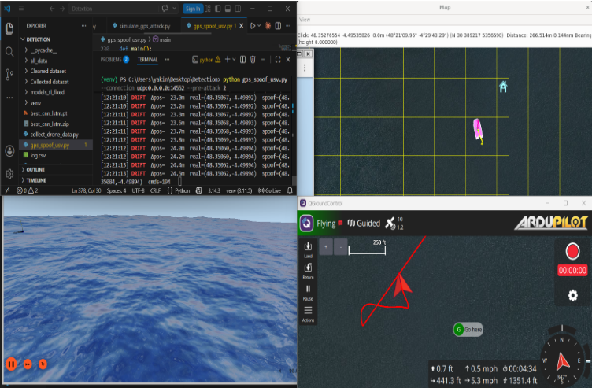
Par défaut, MAVLink ne vérifie pas l'identité de l'émetteur. Tout appareil connecté au flux peut envoyer des commandes de navigation. Le drone ne distingue pas un message légitime d'un message malveillant.
Les messages MAVLink (UDP en clair) peuvent être interceptés et analysés. L'attaquant connaît la position réelle, la trajectoire et l'état du véhicule — ce qui rend le spoofing d'autant plus efficace.
ArduPilot considère les messages MAVLink reçus sur un port autorisé comme légitimes. Même si le GPS reste correct, le système exécute les consignes falsifiées et le véhicule dérive progressivement de sa trajectoire.
Le message SET_POSITION_TARGET_GLOBAL_INT a été conçu pour permettre le guidage
autonome, le contrôle hors-bord et le suivi de trajectoire par un ordinateur compagnon.
Cette fonctionnalité devient une surface d'attaque lorsque le réseau MAVLink n'est pas
sécurisé et que les ports UDP sont accessibles.
Modèle entraîné sur 3 datasets publics pour classifier en temps réel les trames GPS en normal vs spoofed. Déployé en écoute passive sur le flux MAVLink.
| Catégorie | Features | Description |
|---|---|---|
| Navigation | lat_deg, lon_deg, alt_m, alt_ellipsoid_m | Position absolue (degrés / mètres) |
| Précision GPS | eph, epv, hdop, vdop | Indicateurs d'erreur horizontale / verticale |
| Qualité signal | s_variance_m_s, c_variance_rad, satellites_used | Variances EKF, nb de satellites |
| Cinématique | vel_m_s, vel_n/e/d_m_s, cog_rad | Vitesses NED + cap (rad) |
| Dérivées | d_lat, d_lon, d_alt, vel_from_pos | Variations de position inter-trames |
| Anomalies | vel_consistency, noise_per_sat, hdop_eph | Incohérences GPS révélatrices d'attaque |
Le détecteur s'installe en quelques lignes. Il écoute passivement le flux MAVLink — l'attaque drift forward les trames modifiées sur le port 14553.
Gazebo Harmonic + ArduRover SITL + QGroundControl + attaque GPS drift + détecteur : tout dans un conteneur Docker accessible depuis le navigateur via noVNC. Aucune installation locale requise.
Après avoir téléchargé drone-lab.tar depuis Google Drive :
Assurez-vous que Docker Desktop est installé et en cours d'exécution. Ouvrez PowerShell ou le Terminal Windows :
wsl --install
puis redémarrez. Docker Desktop détectera WSL2 automatiquement.